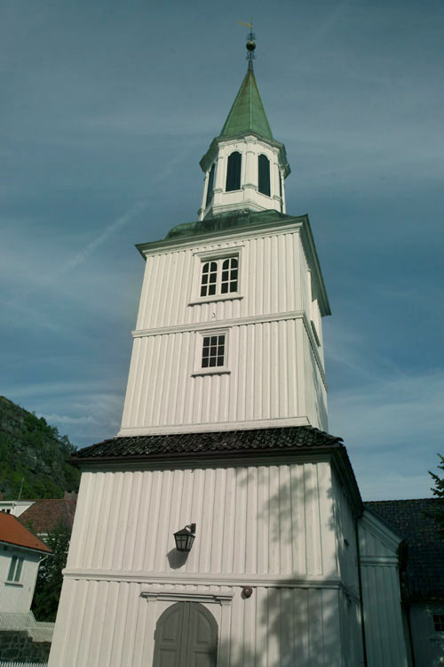
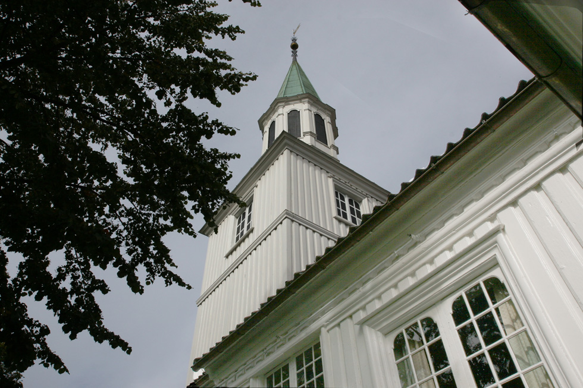
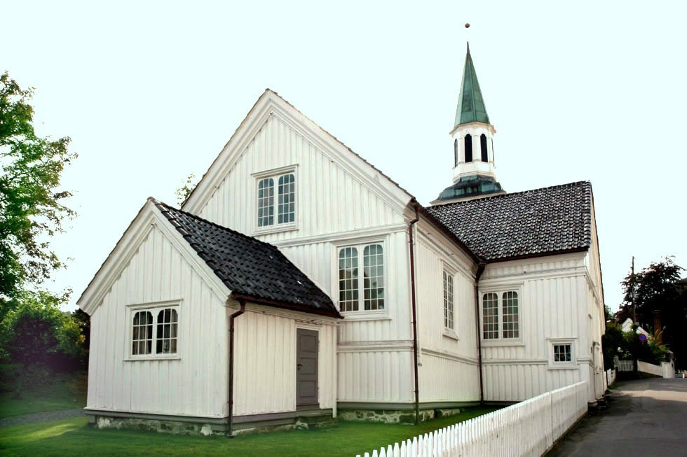
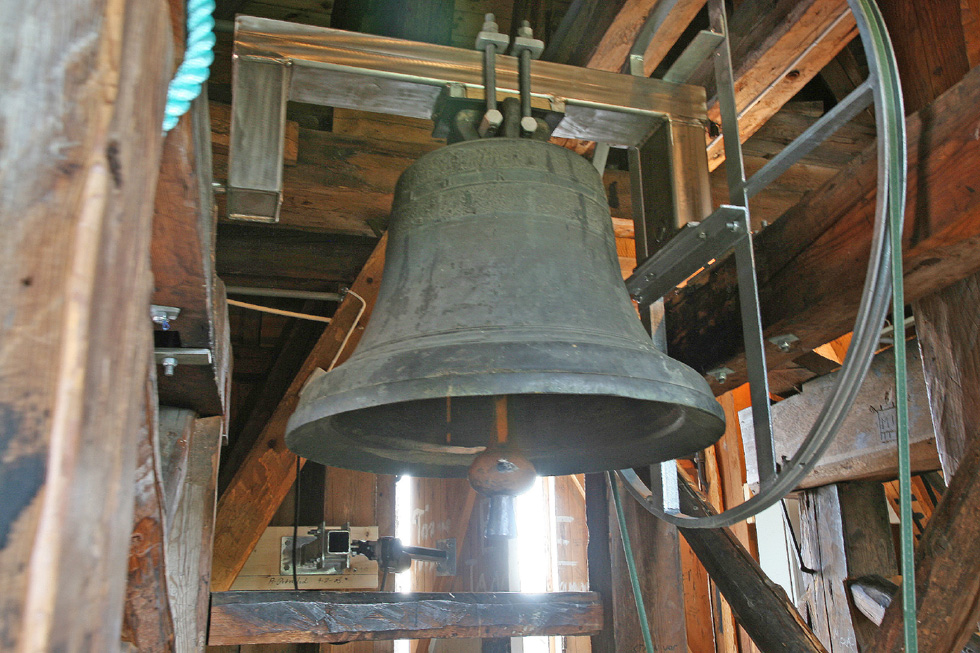
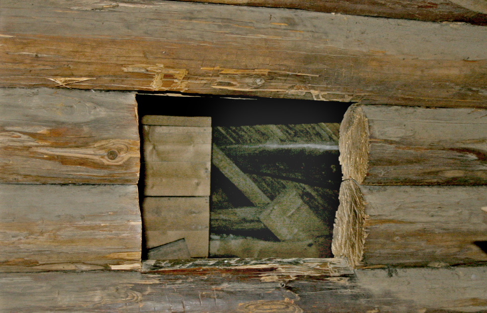
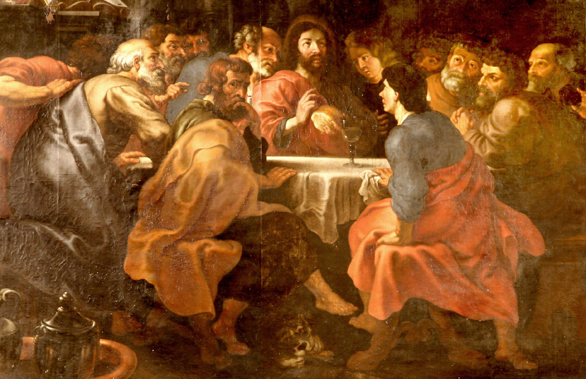
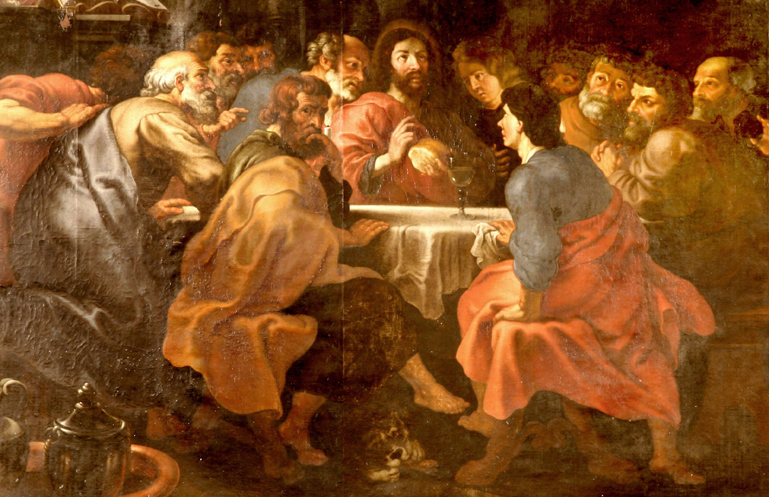
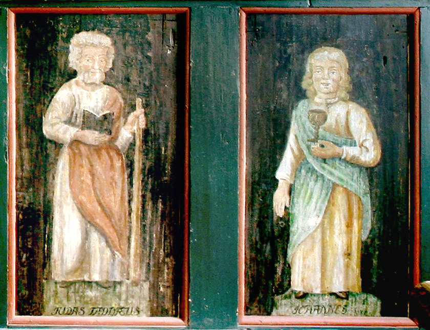
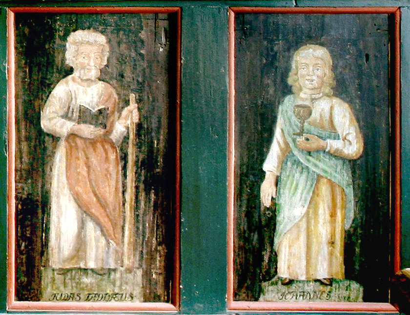

Risør kirke
Foto: Torvald Slettebø, Universitetet i Agder, Seniorsenteret (2007)
Tekst: Bjarne Karsten Nenseter og fra den norske kirkes nettsider
Omviser: Lauritz Paulsen
Tekst lånt fra nettsiden "Den norske kirke - Risør kirkelige fellesråd":
Alterbildet viser «Den hellige nattverd» og er fra kirkens eldste tid, anskaffet før 1669. Bildet er malt av enten en av Rubens elever eller en annen i kretsen rundt Rubens. Dette skulle ha vært til en kirke i Riga i Latvia, men skipet som fraktet alterbildet forliste utenfor Risør. Isaac Lavridtsen Falck regnes som byens grunnlegger, og var nok den som la det økonomiske grunnlag for å få kirken bygd, han sies å ha kjøpt skipsvraket med last - og her fant man altså vårt alterbilde. Rammen rundt altertavlen er skåret av billedhugger Christoffer Ridder fra Christiania.
Christoffer Ridder har også skåret selve prekestolen, sannsynligvis i 1667. Begge deler er utpregede barokkarbeider. Prekestolen viser dydene: tapperhet, visdom, rettferdighet, kjærlighet, tro og håp. Rettferdighet, detalj fra prekestolen.
Over prekestolen henger en himling fra 1774, skåret av Ole Nielsen Weierholt, klokkersønnen fra Austre Moland som ble en sentral figur i Sørlandsrokkoen.
Bispestolen er fra 1743, prydet med «forgyldt Nilledhuggerarbeyder» av Torsten Hoff.
Kirken fikk sitt første orgel i 1747, bygd av den hollandske orgelbygger Gottfried Gloger. Det første orgelet var i bruk fram til 1903. Gloger var kirkens første organist, og i denne perioden fikk han kongelig privilegium til å fungere som orgelbygger i kongeriket Danmark/Norge. Han har bl.a. bygd orgelet i Kongsberg kirke som ble restaurert i 2002. Nåværende orgel i Risør kirke er fra 1985, bygd av Jan Erik Spigseth i Oslo. Dette orgel bli omintonert høsten 2005 av det danske orgelbyggerfirma Bruno Christensen.
Døpefonten skriver seg fra 1753 - også den skåret av Torsten Hoff. Denne var en gave til kirken fra 3 kusiner som alle het Margaretha. Presten på denne tiden het Samuel Stub, han har laget «gavebrevet» som henger på kirkens søndre vegg i koret.
Risør kirke var ferdig restaurert i 1928. Da hadde de farger man i dag kan se vært overmalt i omlag 150 år.
Kirkeskipet - Najaden - ble gitt i forbindelse med restaureringen og hengt opp i kirken i 1930. Dette ble bygd av Osmund Stuøya som arbeidet på «Lindstølverven» og bekostet av Norges Rederforbund. Najaden var Danmark/Norges største krigsskip og ble skutt i senk av det britisk marineskip «Dictator» i slaget ved Lyngør i 1812. I dette slaget døde ca. 140 personer - halvparten av dem er gravlagt på Risør kirkegård som den gang nettopp var tatt i bruk.
Lyskronene er meget gamle, de eldste (foran orgelgalleriet og ved alteret) fra 1696, den i midten fra 1704 og de 2 i sideskipene fra slutten av 1700-tallet. Byen fikk strøm i 1905, så kirken har i de flest år vært opplyst med stearinlys fra disse lyskroner.
I våpenhuset henger kirkens eldste messehakel fra 1668. Stoffet er indisk brokade og silke. Messehakelen ble sist restaurert i 1996 til en pris av kr. 40.000,-, bekostet av Riksantikvaren.
Risør kirkelige fellesråd fikk utarbeidet en tilstandsrapport i 2004. Denne konkluderte med at kirken hadde et prekært vedlikeholdsbehov til en antatt pris av kr. 3,7 mill. Dette beløp bevilget et enstemmig formannskap og bystyre samme høst for å få foretatt vesentlige utvendige reparasjonsarbeider. Under god ledelse av kommunens eiendomsavdeling har erfarne og dyktige lokale håndverkere samarbeidet både med riksantikvar og fylkeskommunale myndigheter og gjort en strålende jobb.
Det har vært en fornøyelse å se med hvilken entusiasme og pietetsfølelse alle involverte håndverkere har engasjert seg for å gjøre et like godt arbeid som våre forfedre gjorde den gang bygningen ble reist. Vår praktfulle kirke er nå godt rustet til å møte mange års sol og regn, i storm og stille i tjeneste for byens befolkning og tilreisende gjester både i sorg og glede.
    
 



 


Risør Kirke - På Kirkevandring i Aust-Agder
Fra omkring 1600 vokste det fram et strandsted ytterst ved Søndeledsfjorden. Det var trelasthandelen med hollenderne som førte til at en del handelsmenn slo seg ned på stedet som gjerne ble kalt Øster-Risøer (til forskjell fra Vester-Risøer ved Mandal). Stedet nevnes i riksregistrantene fra 1607. I 1630 ble Risør ladested.
Risør lå i Søndeled sogn som var anneks til Gjerstad. Kirkeveien var lang, og fjorden kunne ofte være stri å ro. Det førte til at befolkningen søkte kong Christian IV om lov til å bygge kirke. De lovet å bekoste byggingen selv og vedlikeholdet, ja de lovet endog å «underholde og fornøye den som derudi Tjenesten forretter». Kongen innvilget søknaden 19.7.1646 på Akershus slott. «Da have Vi på sådan Deres underdanigste Begjæring og Anmodning Nådigst bevilget og tillatt... at de udi fornævte Risøer på Deres egen Bekostning en Kirke... må opp-bygge...»
Med iver tok en fatt på arbeidet og alt sommeren 1647 ble kirken vigslet av prost Salve Thomæson i Øyestad. Den er bygget som korskirke i tømmer med tårn i vestre ende. Den fikk navnet Den Hellige Ånds kirke.
Lenge sto kirken med de bare tømmervegger, men i 1721 fikk den tømmermannskledning med de stilige horisontallister. Det skal være Tore Bovig som er mester for «Kierchens opwegning». Det nåværende tårn i barokk er fra 1733 og «giver Kirken icke liden anseelse udvendig». Sakristiet er bygd i 1739. «Johanis» Omholt var mester både for det og for tårnet.
Karakteristisk for interiøret var de opphøyede og innelukkede stolbenker på hver side av inngangen og i begge korsarmene. Galleriene er kommet til i løpet av 1700-tallet. I 1723 arbeidet Peder Snecker fra Arendal på et «coer». Alle kirkebenkene var lukket med dører. Samtidig som kirken ble kledt utvendig, ble den også panelt innvendig. Noe senere fikk den nåværende hvelv. Skymalingen ble bekostet av Claus Winther og H. Elisabeth i 1765. Harmoniske farger preger interiøret. Veggene er holdt i en rolig dypgrønn tone og gesimsene i vakker blå marmorering som danner fin overgang til den klare skymaling i hvelvet.
Alterbildet hører med til det mest verdifulle inventar kirken har. Det var egentlig bestemt for Riga, men båten det ble sendt med, havarerte utenfor Risør eller Lyngør. Maleriet ble så kjøpt av Isaach L. Falch som skjenket det til kirken. Det fremstiller den store nattverd og skal være kopi av et Rubens-bilde som henger i Milano.
Når en kommer inn i Risør kirke, legger en merke til den praktfulle treskurden. Hele tre av våre største mestere på området har levert arbeider til Risør kirke. Barokkunstneren Christopher Ridder er mester for rammen rundt alterbildet. Han har også skåret prekestolen og den eldste døpefont. Torsten Hoff har også skåret en døpefont, de tre margreters font. Den er en gave fra 3 søskenbarn som alle het Margreta, «een eringdring av deres Daab». Hoff har antagelig også skåret skriftestolens ornamenter. Sørlandsrokokkoens mester, Ole N. Weierholt er også representert i denne kirken. Han har skåret et toppstykke til altertavlen og kronen over prekestolen, og antagelig også trappen til prekestolen.
Dessverre gikk det slik også i Risør at det praktfulle interiør ble overmalt i slutten av forrige århundre og en del inventar fjernet. Men det lykkes restaureringskonsulent Finn Krafft å gi kirken tilbake det gamle fargerike interiør, et fantastisk restaureringsarbeide. Arkitekt for restaureringsarbeidet var Ole Øvergård. Og Risørs befolkning viste da som tidligere, sin store kjærlighet til kirken.
I 1947 feiret den 300-års jubileum og i den anledning ble det gitt ut et vakkert festskrift. Sitt første orgel fikk kirken i 1743. Det er senere skiftet ut flere ganger. Det nyeste er fra 1985 og har 26 stemmer fordelt på 3 manualer og pedal. Heldigvis har en beholdt den gamle vakre orgelfasade.
Når de to kirkeklokker fra 1751 kaller på folket, så er det til samling i en av vårt lands vakreste barokkirker. Den har fulgt folkets liv i den vakre Sørlandsby i sorg og glede i over 300 år.
Teksten er hentet fra Bjarne Karsten Nenseters bok ”På Kirkevandring i Aust-Agder”, som han utga i 1993, på grunnlag av sine artikler i Agderposten i 1950-årene, da han var prest i Aust-Agder. Vi gjengir her teksten med tillatelse fra Nenseters arvinger.